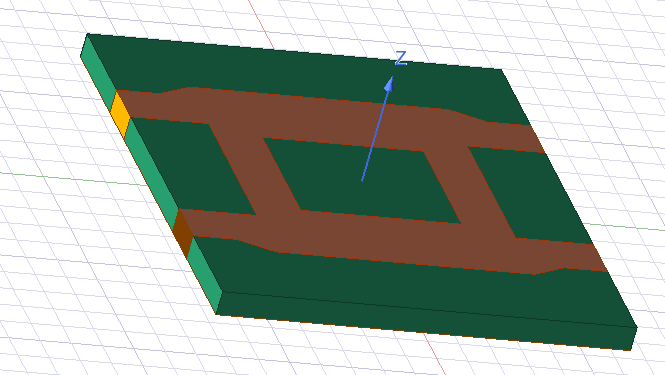
July 8, 2026
Project Sections
1. Introduction
A branch-line coupler is a four-port microwave network that divides an input signal equally between two output ports while maintaining a 90° phase difference between them. Ideally, the fourth port is isolated and receives no power from the excited input.
This project develops a microstrip 90° hybrid coupler from initial circuit synthesis through full-wave electromagnetic validation. The design begins with an ideal transmission-line model in Keysight ADS, where the required quarter-wave impedances and electrical lengths are established. The electrical design is then converted into a physical microstrip layout and evaluated in Ansys HFSS.
The goal of the project is not only to verify the nominal 3 GHz design, but also to examine how branch dimensions influence center frequency, amplitude balance, phase imbalance, and usable bandwidth.
2. Branch-Line Coupler Theory
A branch-line coupler is formed by four quarter-wavelength transmission-line sections arranged as a square. When Port 1 is excited, Ports 2 and 3 are the useful outputs, while Port 4 is the isolated port.
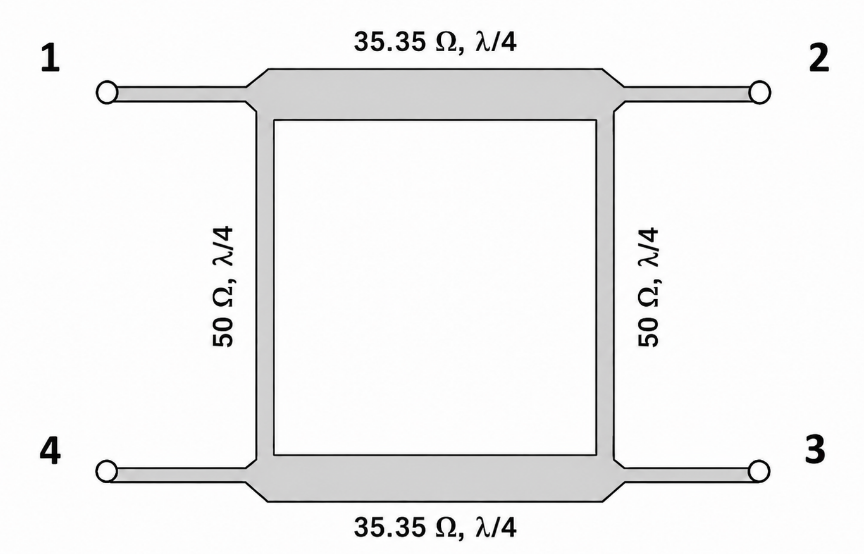
Quarter-wave operation
Each branch is designed to be electrically 90° long at the center frequency:
For a microstrip implementation, the initial physical length is approximately one quarter of the guided wavelength:
Because \(\varepsilon_\text{eff}\) depends on trace width and substrate geometry, the final lengths are synthesized in ADS LineCalc and then refined through HFSS simulation.
Equal-split impedance synthesis
For a conventional equal-split branch-line coupler with system impedance \(Z_0\), the horizontal branches use \(Z_0/\sqrt{2}\) and the vertical branches use \(Z_0\):
For a 50 Ω system, this gives 35.35 Ω horizontal branches and 50 Ω vertical branches. The 35.35 Ω branches control the equal power division, while the 50 Ω branches complete the phase relationships required for matching and isolation.
Ideal scattering behavior
At the design frequency, the ideal equal-split response is:
The input should be matched, the isolated port should receive negligible power, and the two output paths should remain in quadrature:
The branch-line coupler is inherently narrowband because the match, isolation, and phase conditions depend on all four branches remaining close to 90° electrical length.
3. Design Goals and Specifications
The objective was to design a 3 GHz equal-split branch-line hybrid coupler for a 50 Ω microwave system. The physical implementation uses the same generic FR-4 stackup used in the earlier microstrip and Wilkinson-divider projects.
| Parameter | Design target |
|---|---|
| Center frequency | 3 GHz |
| Reference impedance | 50 Ω |
| Coupling ratio | Equal split |
| Output magnitude | Approximately -3 dB at Ports 2 and 3 |
| Output phase difference | 90° |
| Input return loss | Better than -20 dB near 3 GHz |
| Port 1 to Port 4 isolation | Better than -20 dB near 3 GHz |
| Implementation | Microstrip on FR-4 |
| Substrate parameters | \(\varepsilon_r=4.3\), \(h=1.6\ \text{mm}\), \(t=35\ \mu\text{m}\) |
Amplitude balance was evaluated as the magnitude difference between the two output paths:
Phase balance was evaluated relative to the ideal quadrature condition:
4. Ideal ADS Simulation
The branch-line coupler was first verified in ADS using an ideal TLIN model. This establishes the expected behavior before microstrip effects such as junction discontinuities, conductor loss, dielectric loss, and radiation are included.
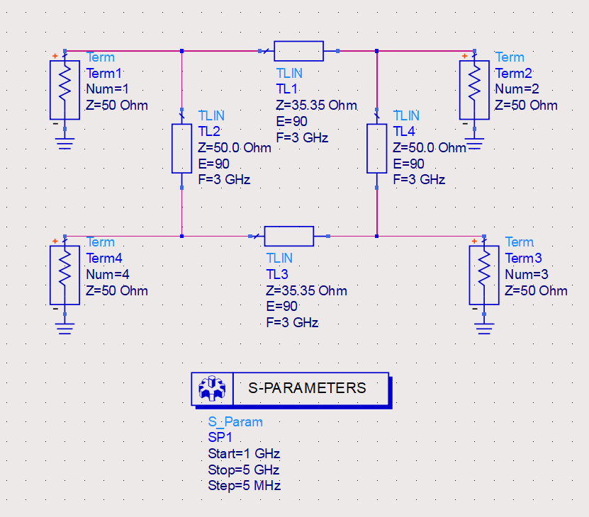
The top and bottom branches were assigned 35.35 Ω, while the left and right branches were assigned 50 Ω. All four lines were set to 90° electrical length at the 3 GHz design frequency and simulated from 1 GHz to 5 GHz.
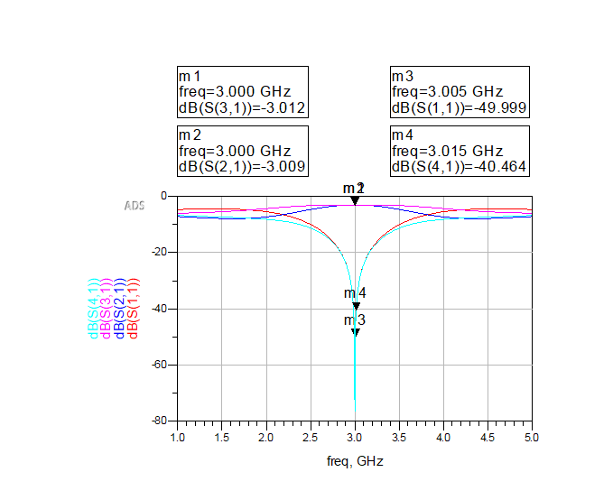
At 3 GHz, the ideal model produced \(S_{21}=-3.009\ \text{dB}\) and \(S_{31}=-3.012\ \text{dB}\), essentially the expected lossless -3.01 dB equal split. The input match and isolation also showed deep nulls near 3 GHz, with \(S_{11}\) around -50 dB and \(S_{41}\) around -40.5 dB.
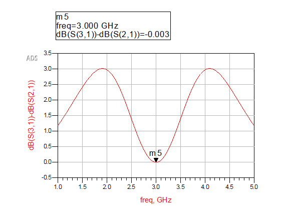
The output amplitude difference at 3 GHz was only -0.003 dB, confirming that the two output ports receive nearly identical power at the center frequency.
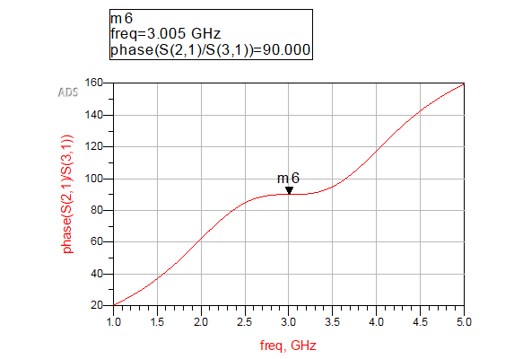
The phase of \(S_{21}/S_{31}\) was 90° near 3 GHz, confirming the expected quadrature relationship between the two equal-amplitude output signals.
| Metric | Ideal ADS result |
|---|---|
| \(S_{21}\) at 3 GHz | -3.009 dB |
| \(S_{31}\) at 3 GHz | -3.012 dB |
| Output amplitude difference | -0.003 dB |
| Output phase difference | 90° |
| \(S_{11}\), near 3 GHz | about -50 dB |
| \(S_{41}\), near 3 GHz | about -40.5 dB |
5. Branch Length and Bandwidth Sweep
Because the coupler depends on four quarter-wave sections, the useful operating band is limited by how closely the branches remain near 90° electrical length. The ideal ADS model was evaluated with three requirements: \(S_{11},S_{41}\le -20\ \text{dB}\), amplitude imbalance within 0.5 dB, and phase difference within \(90^\circ\pm5^\circ\).
Nominal bandwidth
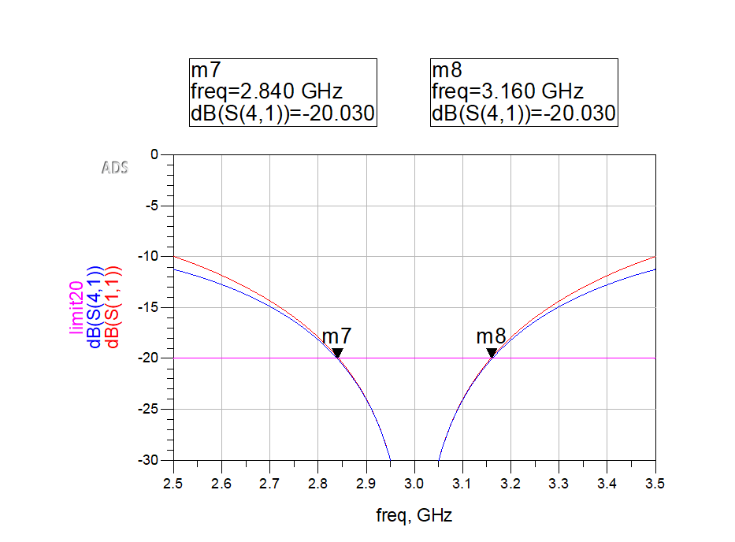
The match and isolation response was the limiting criterion in the ideal model. The isolation response crossed the -20 dB threshold near 2.84 GHz and 3.16 GHz.
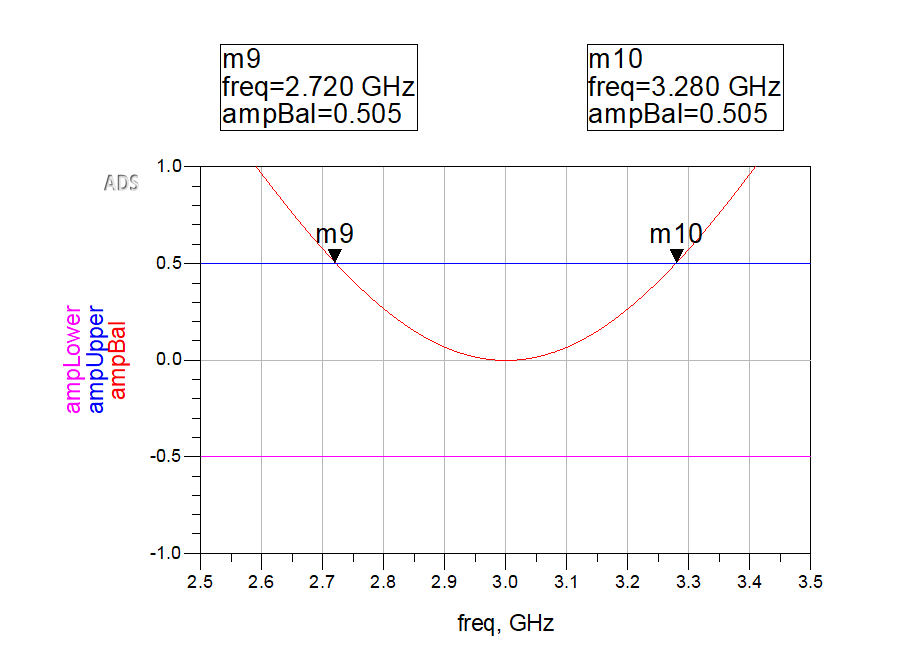
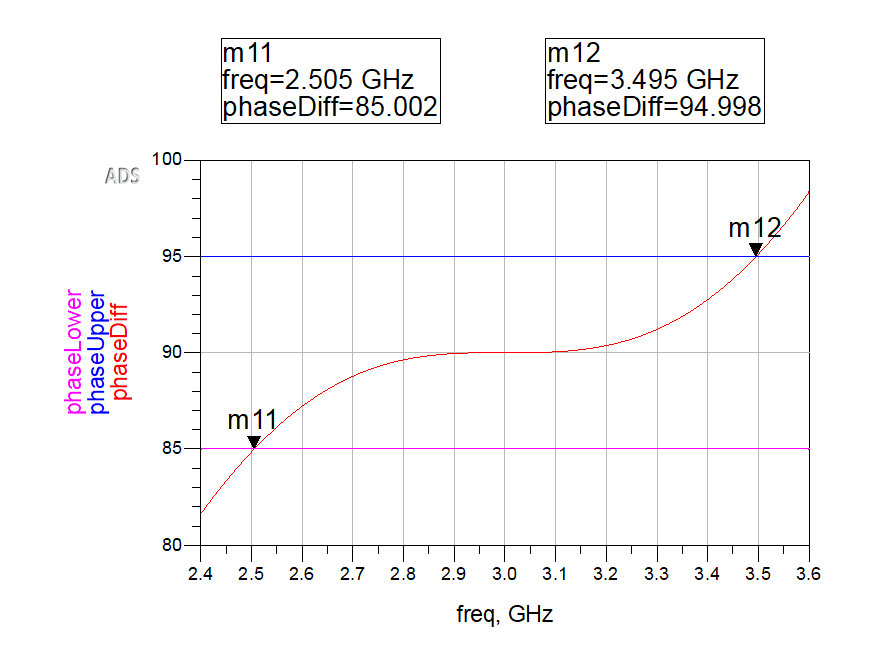
| Requirement | Approximate valid range |
|---|---|
| Isolation, \(S_{41}\le -20\ \text{dB}\) | 2.84-3.16 GHz |
| Amplitude imbalance within 0.5 dB | 2.72-3.28 GHz |
| Phase difference within \(90^\circ\pm5^\circ\) | 2.505-3.495 GHz |
Common branch-length sweep
A common electrical-length sweep was then performed by setting all four ideal branches to 85°, 90°, and 95° at the 3 GHz reference frequency.
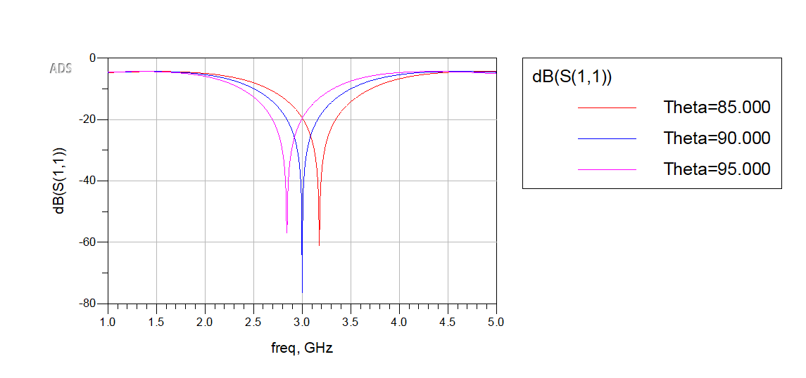
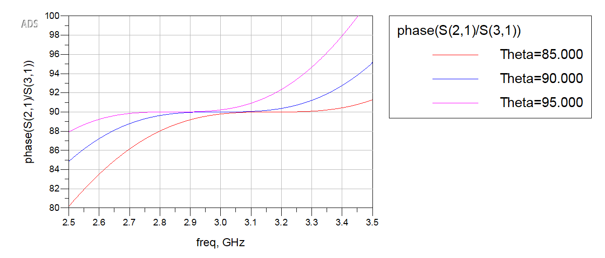
| Electrical length at 3 GHz | Relative branch length | Approximate shifted center frequency |
|---|---|---|
| 85° | Shorter than nominal | 3.18 GHz |
| 90° | Nominal | 3.00 GHz |
| 95° | Longer than nominal | 2.84 GHz |
Changing all four branches by the same amount primarily translates the ideal response in frequency. In a physical microstrip implementation, the shift is not perfectly self-similar because dispersion, finite-width effects, loss, junctions, and ports also influence the response.
6. Microstrip Implementation
The ideal transmission-line model was then converted into an ADS MLIN distributed microstrip implementation. This model retains the branch impedances and quarter-wave design intent while adding substrate-dependent propagation, conductor loss, and dielectric loss.
| Branch type | Target impedance | Width | Electrical length | Initial physical length |
|---|---|---|---|---|
| Horizontal branches | 35.35 Ω | 5.326 mm | 90° at 3 GHz | 13.450 mm |
| Vertical branches | 50 Ω | 3.110 mm | 90° at 3 GHz | 13.821 mm |
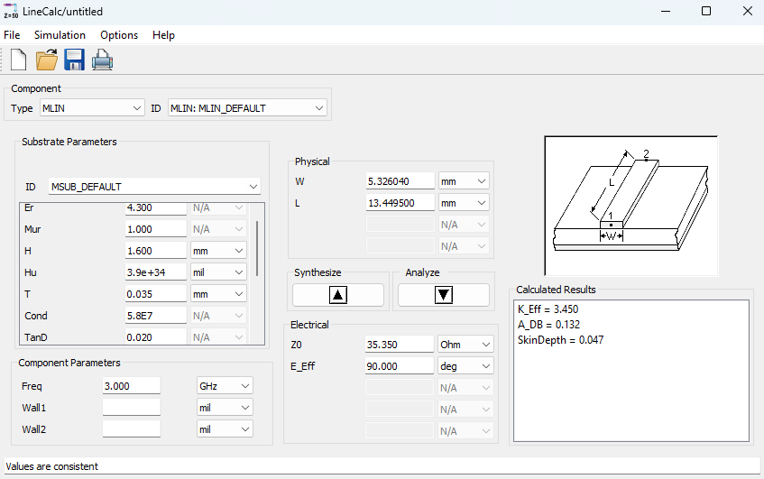
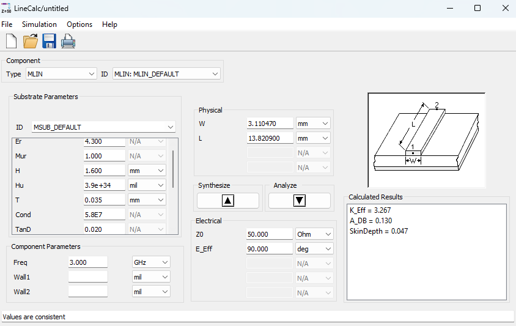
The lower-impedance horizontal lines require a wider trace. Their larger width produces a slightly higher effective dielectric constant than the 50 Ω lines, so their physical quarter-wave length is slightly shorter.
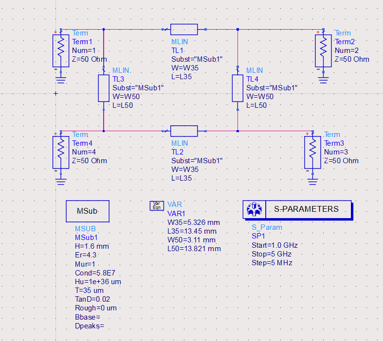
The MLIN model remains a schematic-level microstrip model: it captures line loss and propagation, but it still connects branch endpoints as ideal schematic nodes. It does not yet model finite-width T-junction discontinuities, which are included later in HFSS.
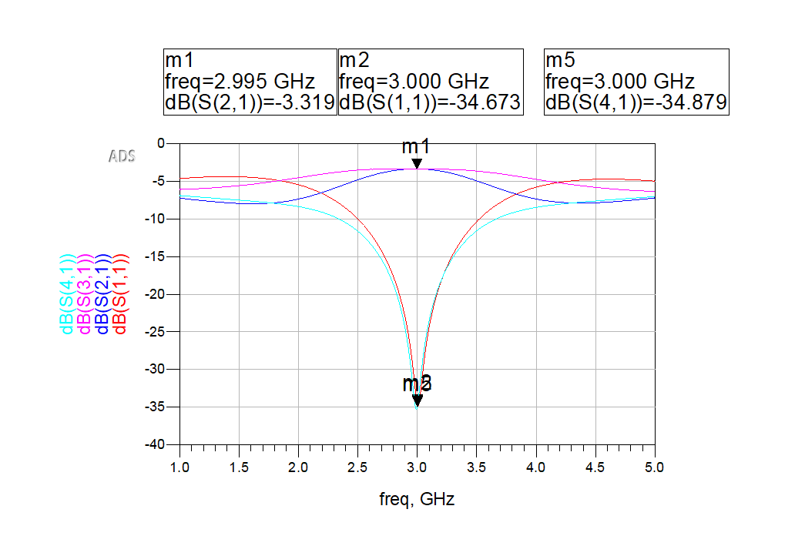
The MLIN response stayed centered very close to 3 GHz. The through-path response reached approximately -3.319 dB near 2.995 GHz, about 0.31 dB below the lossless ideal value because of conductor and dielectric loss in the FR-4 microstrip model.
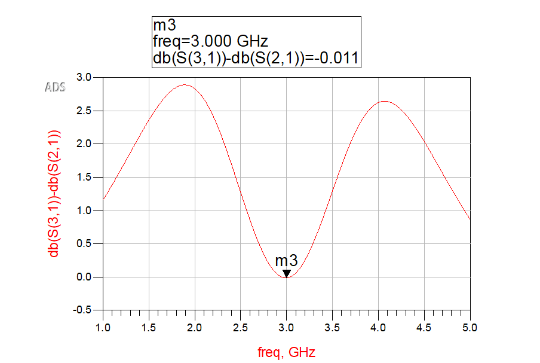
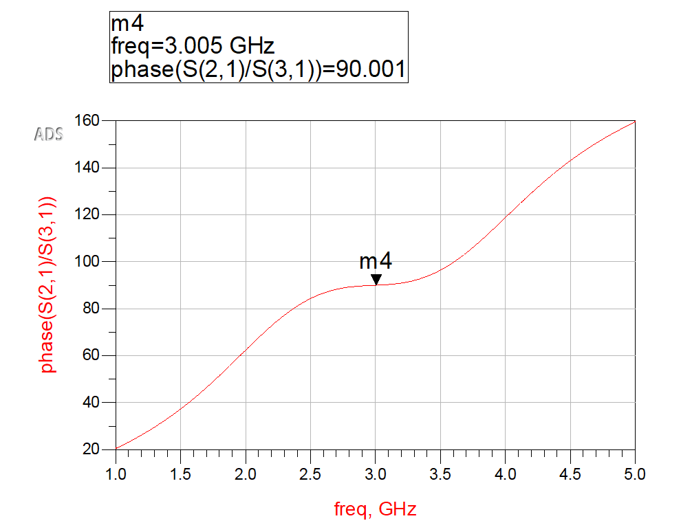
At 3 GHz, the MLIN model gave \(S_{11}=-34.673\ \text{dB}\), \(S_{41}=-34.879\ \text{dB}\), amplitude difference of -0.011 dB, and phase difference of 90.001° at the nearest simulated point.
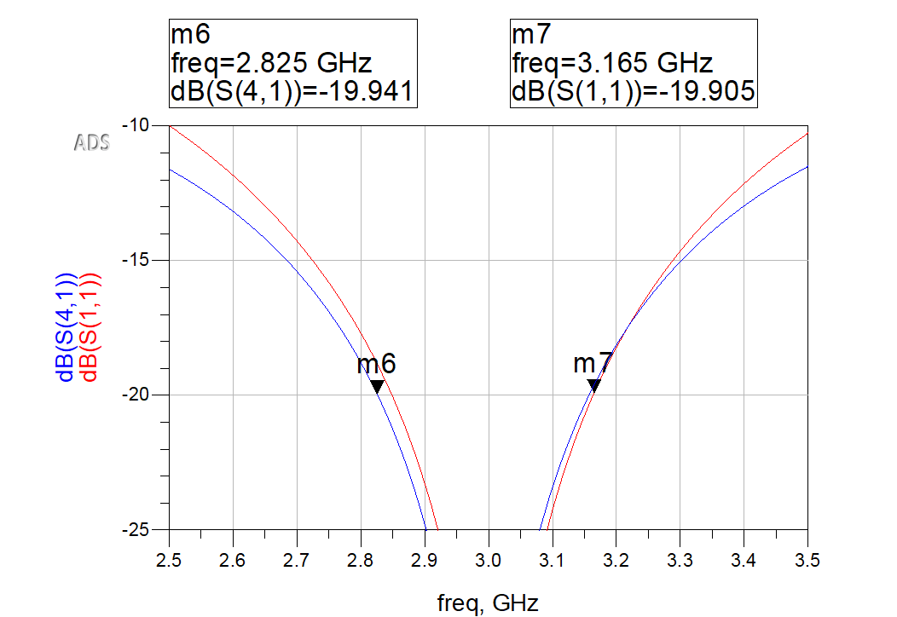
The MLIN match/isolation bandwidth was approximately 2.825-3.165 GHz, or about 340 MHz. This is slightly wider than the ideal model's 320 MHz match/isolation bandwidth, although the complete usable-bandwidth definition should also include amplitude and phase balance.
7. Layout Implementation and HFSS EM Simulation
After the ADS ideal and MLIN stages, the coupler was implemented in HFSS for full-wave electromagnetic simulation. The HFSS model evaluates the actual three-dimensional structure, including finite trace width, junction effects, port discontinuities, substrate behavior, and electromagnetic coupling between branches.
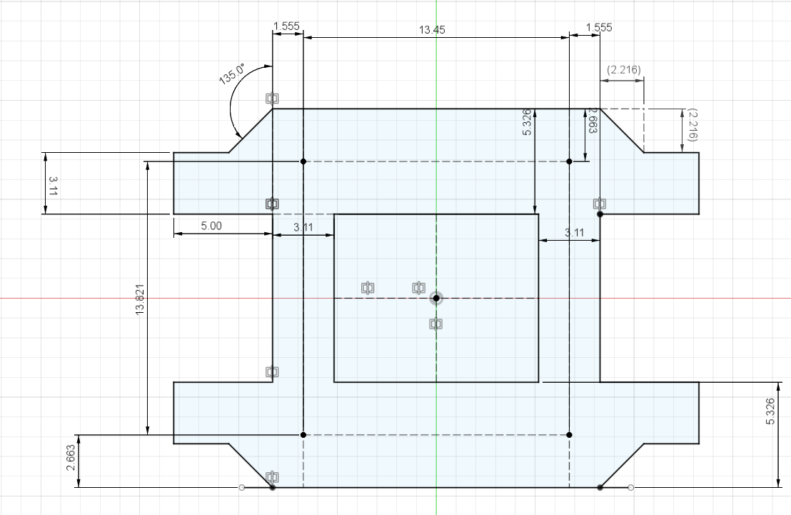
The first HFSS simulation showed that the response shifted above the intended 3 GHz design frequency. The main matching/isolation null appeared near 3.315 GHz, indicating that the physical HFSS layout was electrically shorter than the ideal and MLIN ADS models.
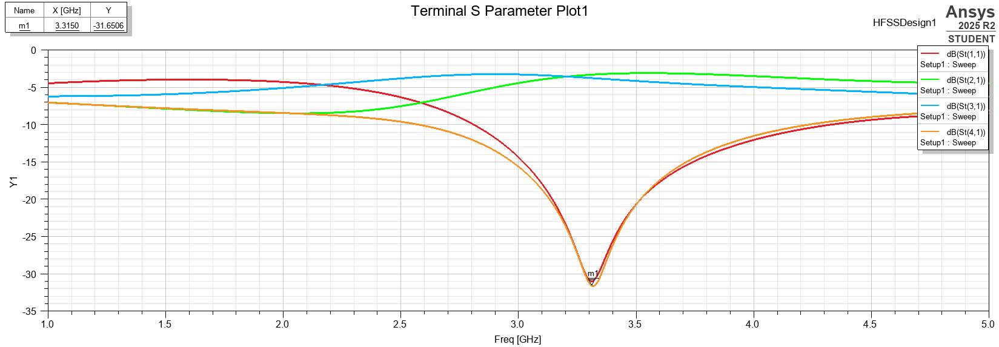
To correct the shift, a common length-scaling factor was applied:
The branch lengths were then scaled from the original LineCalc values:
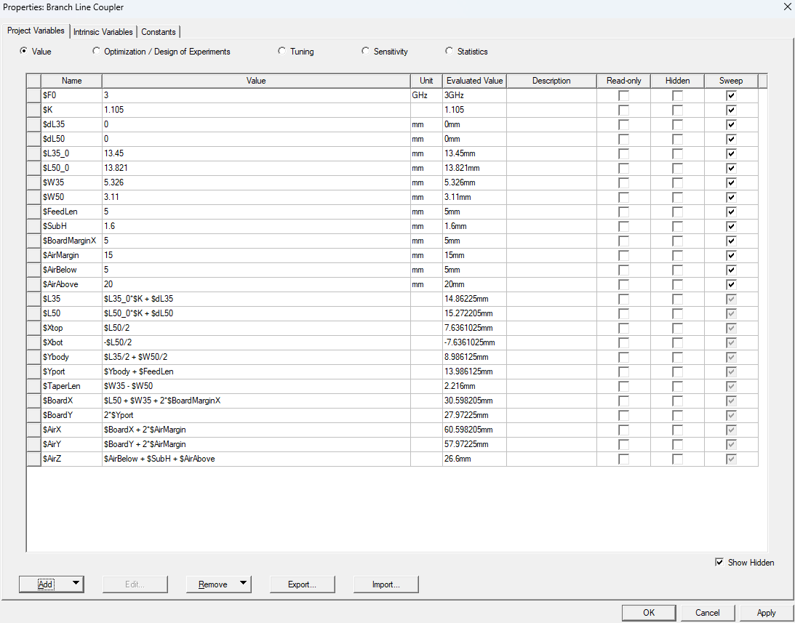
The tuned HFSS response is shown below. At 3 GHz, the input match and isolation were both strong, and the output ports showed the expected split behavior.
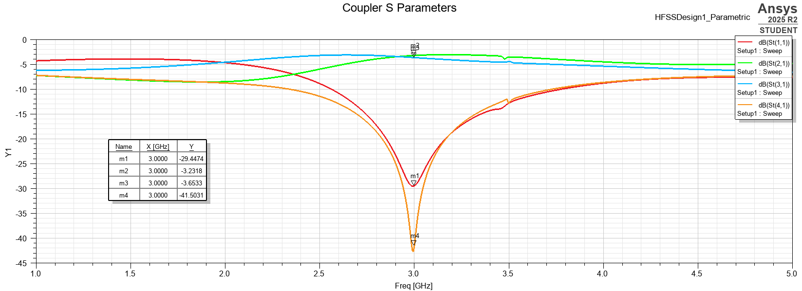
| Quantity | HFSS result at 3 GHz |
|---|---|
| \(S_{11}\) | -29.45 dB |
| \(S_{21}\) | -3.23 dB |
| \(S_{31}\) | -3.65 dB |
| \(S_{41}\) | -41.50 dB |
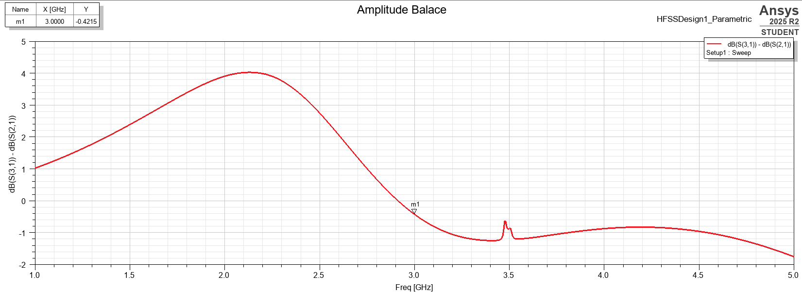
At 3 GHz, the amplitude imbalance was \(\Delta A=-0.4215\ \text{dB}\), which satisfies the selected ±0.5 dB criterion, although it is close to the upper-frequency edge of the valid amplitude-balance range.
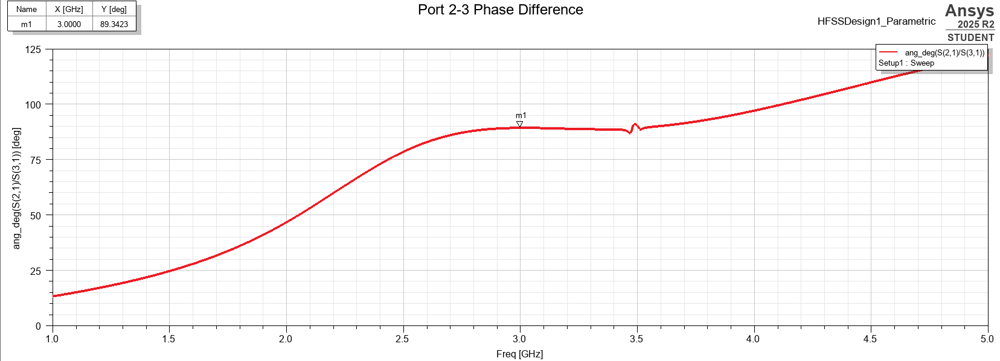
The output phase difference at 3 GHz was 89.34°, very close to the ideal quadrature condition.
HFSS usable bandwidth
The same bandwidth criteria used for the ideal ADS model were applied to the tuned HFSS result:
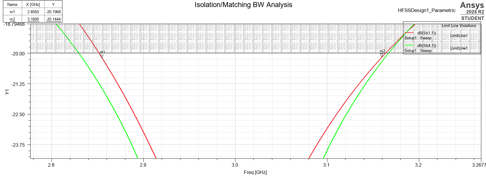
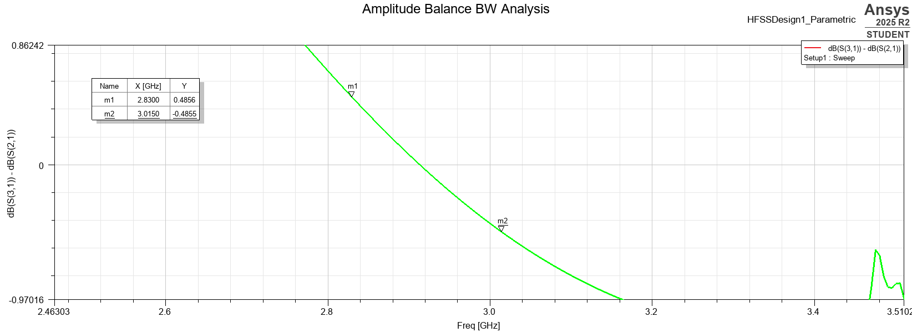
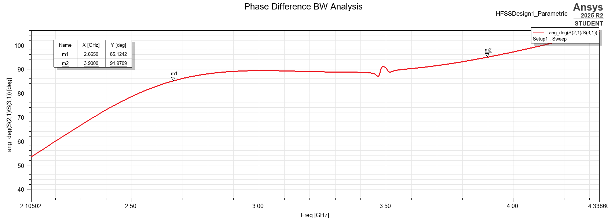
| Criterion | Limit | Valid HFSS range |
|---|---|---|
| Input match / isolation | \(S_{11},S_{41}\le -20\ \text{dB}\) | 2.855-3.160 GHz |
| Amplitude balance | \(|\Delta A|\le0.5\ \text{dB}\) | 2.830-3.015 GHz |
| Phase balance | \(90^\circ\pm5^\circ\) | 2.665-3.900 GHz |
| Final usable bandwidth | All criteria satisfied | 2.855-3.015 GHz |
The final HFSS bandwidth was limited mainly by output amplitude imbalance. Phase balance remained valid over a much wider range, and match/isolation remained valid to a higher upper frequency than the final usable band.
8. Comparison and Discussion
The coupler was evaluated using three modeling levels: an ideal ADS TLIN model, an ADS MLIN distributed microstrip model, and a full-wave HFSS EM model. Each stage added more physical detail and therefore produced a more realistic result.
| Model | Center-frequency behavior | Comment |
|---|---|---|
| Ideal ADS TLIN | 3.0 GHz | Theoretical lossless quarter-wave response |
| ADS MLIN | Near 3.0 GHz | Physical microstrip with loss and dispersion |
| Initial HFSS | About 3.315 GHz | Full-wave layout electrically too short |
| Tuned HFSS | Near 3.0 GHz | Corrected using branch-length scaling |
| Metric | Ideal ADS | ADS MLIN | Tuned HFSS |
|---|---|---|---|
| \(S_{21}\) | -3.009 dB | -3.319 dB | -3.23 dB |
| \(S_{31}\) | -3.012 dB | about -3.33 dB | -3.65 dB |
| \(S_{11}\) | about -50 dB | -34.67 dB | -29.45 dB |
| \(S_{41}\) | about -40.5 dB | -34.88 dB | -41.50 dB |
| Amplitude imbalance | -0.003 dB | -0.011 dB | -0.4215 dB |
| Phase difference | 90.0° | 90.001° | 89.34° |
| Model | Final usable bandwidth | Fractional bandwidth | Main limiting factor |
|---|---|---|---|
| Ideal ADS | 2.84-3.16 GHz | about 10.7% | Isolation |
| Tuned HFSS | 2.855-3.015 GHz | about 5.3% | Amplitude imbalance |
The comparison shows why full-wave validation is important for microwave layout design. The ideal model verified the topology, and the MLIN model provided a first physical microstrip approximation. HFSS then revealed layout-level effects from finite-width junctions, feed transitions, substrate/ground behavior, and port discontinuities.
The initial HFSS upward frequency shift was the key practical result. It showed that even when microstrip lengths are correct according to LineCalc, the complete physical layout can behave differently because the coupler is not just four isolated transmission lines. The junctions and feed regions are part of the electromagnetic structure.
9. Summary and Engineering Takeaways
This project designed and validated a 3 GHz microstrip branch-line hybrid coupler using a progressive RF workflow: theoretical synthesis, ideal ADS simulation, ADS MLIN microstrip implementation, and full-wave HFSS validation.
For a 50 Ω equal-split hybrid coupler, the horizontal branches were designed as 35.35 Ω quarter-wave sections and the vertical branches as 50 Ω quarter-wave sections. The ideal ADS model verified equal power split, high isolation, good input match, and a 90° output phase difference.
The MLIN implementation introduced realistic microstrip widths, substrate height, dielectric constant, conductor loss, dielectric loss, and effective dielectric constant. The MLIN response stayed close to the ideal result, but showed the expected additional insertion loss compared with the lossless TLIN model.
The first HFSS layout shifted above the intended 3 GHz center frequency, so the design was rebuilt parametrically and tuned with the scaling factor \(K=1.105\). The final tuned HFSS model achieved strong input matching, strong isolation, acceptable amplitude balance, and near-quadrature phase difference at 3 GHz.
| Metric | Final HFSS result at 3 GHz |
|---|---|
| \(S_{11}\) | -29.45 dB |
| \(S_{21}\) | -3.23 dB |
| \(S_{31}\) | -3.65 dB |
| \(S_{41}\) | -41.50 dB |
| Amplitude imbalance | -0.4215 dB |
| Phase difference | 89.34° |
The final overlapping usable bandwidth was 2.855-3.015 GHz, or 160 MHz, corresponding to approximately 5.3% fractional bandwidth. This is narrower than the ideal ADS bandwidth because the full-wave model includes realistic layout effects that are not captured by ideal schematic transmission-line models.
The main takeaway is that ideal transmission-line synthesis is a necessary starting point, but final microwave layout validation requires EM simulation. ADS establishes the theory, MLIN checks the physical transmission-line dimensions, and HFSS validates the full layout geometry.
Overall, the result is a 3 GHz branch-line coupler that performs well in full-wave simulation and clearly demonstrates the importance of EM validation when moving from schematic-level RF design to physical microwave layout.
Back to Portfolio